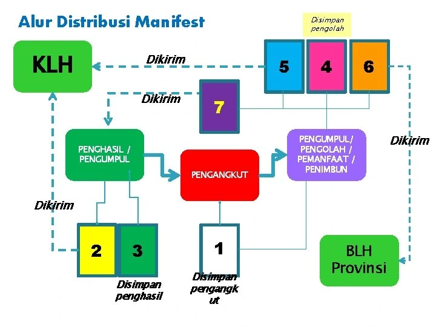
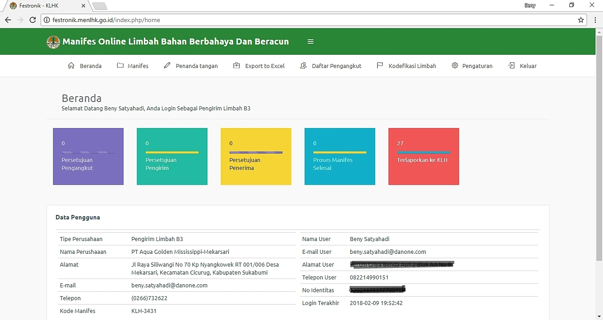
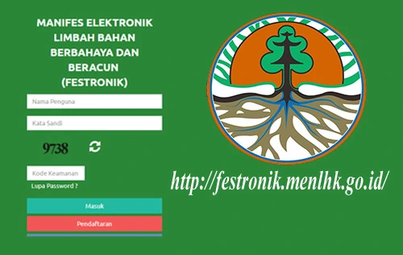
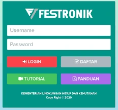

Tentang B3 · Manifest Elektronik
Manifest Elektronik (FESTRONIK) Sebagai Dokumen Pengelolaan Limbah B3
FESTRONIK merupakan dokumen elektronik yang digunakan untuk pencatatan, pelacakan, dan pembuktian alur perpindahan limbah B3 dari penghasil, pengangkut, hingga fasilitas pengelolaan.
Mengapa Perlu Adanya Dokumen Pengelolaan Limbah B3?
Setiap pengangkutan limbah B3 perlu dilengkapi dokumen resmi karena limbah B3 memiliki karakteristik berbahaya dan beracun. Dokumen tersebut menjadi legalitas kegiatan pengelolaan sekaligus sarana pengawasan agar perpindahan limbah tidak menimbulkan risiko terhadap manusia dan lingkungan.
Dokumen limbah B3 menyertai perjalanan limbah dari titik asal menuju tujuan pengelolaan. Dengan adanya dokumen, pihak penghasil, pengangkut, dan penerima dapat mengetahui tanggung jawab masing- masing dalam rantai pengelolaan.
Perkembangan Penggunaan Dokumen Pengelolaan Limbah B3
Sistem dokumen pengelolaan limbah B3 berkembang secara bertahap untuk meningkatkan ketertiban pelaporan, pemantauan lalu lintas limbah, serta pengawasan terhadap perpindahan limbah B3.
- Manifest manual berangkap sebagai dokumen pengelolaan limbah B3.
- Manifest manual yang dilengkapi stiker barcode.
- Manifest elektronik atau FESTRONIK sebagai dokumen pengelolaan limbah B3.
Manifest Manual Sebelum Berlakunya Era FESTRONIK
Pada fase awal, manifest digunakan sebagai dokumen limbah B3 yang diberikan saat penyerahan limbah untuk diangkut dari lokasi penghasil menuju penyimpanan, pengumpulan, pengangkutan, pengolahan, pemanfaatan, atau penimbunan hasil pengolahan.
Dokumen manual pada umumnya memiliki beberapa bagian yang diisi oleh pihak penghasil atau pengumpul, pihak pengangkut, serta pihak penerima seperti pengumpul, pemanfaat, atau pengolah.

Kelemahan sistem manual antara lain proses arsip yang berat, potensi dokumen tercecer, kesulitan pelacakan, dan risiko ketidaktertiban data apabila pengelolaan tidak dilakukan secara disiplin.
Manifest Manual Barcode Sebelum Berlakunya Era FESTRONIK
Pada fase berikutnya, manifest manual mulai dilengkapi barcode. Tujuannya adalah membantu pengawasan, memperkuat keaslian dokumen, dan mengurangi potensi duplikasi dokumen limbah B3.
- Membantu memberikan jaminan terhadap keaslian dokumen.
- Mendukung pengawasan terhadap pengelolaan limbah B3.
- Mendorong pengelolaan limbah yang lebih tertib dan terpantau.
Seiring meningkatnya kebutuhan pengelolaan limbah B3, sistem barcode tetap memiliki keterbatasan. Oleh karena itu, sistem elektronik dikembangkan agar proses pengawasan dan pelaporan menjadi lebih sistematis.
Manifest Elektronik (FESTRONIK) Sebagai Dokumen Pengelolaan Limbah B3 yang Sah
FESTRONIK merupakan bentuk pengembangan dokumen manifest ke sistem elektronik. Sistem ini membantu integrasi data pengelolaan limbah B3, mulai dari input data, pengangkutan, hingga pelaporan dan pemantauan.
Dalam praktiknya, FESTRONIK digunakan oleh para pihak dalam rantai pengelolaan limbah B3, termasuk penghasil, pengangkut, pengumpul, pemanfaat, pengolah, dan/atau penimbun, sesuai kebutuhan serta kewajiban masing-masing.


Dengan sistem elektronik, proses pengelolaan limbah B3 diharapkan menjadi lebih terdokumentasi, lebih mudah ditelusuri, dan lebih siap untuk kebutuhan pelaporan.
Bagaimana Penggunaan Manifest Elektronik (FESTRONIK)?
Sebelum menggunakan FESTRONIK, perusahaan perlu memastikan kelengkapan akun, profil, dan data pengelolaan limbah. Dalam ekosistem pelaporan, pengelolaan limbah B3 berkaitan dengan sistem seperti SIMPEL dan Si Raja Limbah B3.
- Perusahaan menyiapkan akun dan kelengkapan profil.
- Data limbah B3 yang akan dikelola diinput sesuai kebutuhan.
- Proses pelacakan pengiriman dan status dokumen dilakukan melalui sistem.
- Dokumen dan status akhir digunakan sebagai bagian dari tertib administrasi pengelolaan limbah B3.

